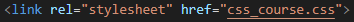
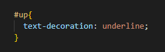
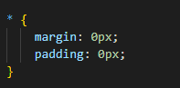
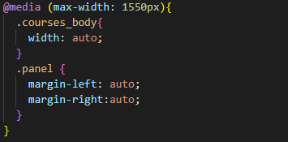

CSS-документ — это обычный текстовый документ с расширением .css. Его можно создать
как в Блокноте, так и в специализированном редакторе (Notepad++, Visual Studio Code и т.п.).
CSS — язык таблиц стилей, который позволяет прикреплять стиль (например, шрифты и цвет) к структурированным документам (например, документам HTML и приложениям XML).
подключение CSS
Чтобы подключить CSS к HTML-документу нужно воспользоваться самозакрывающимся тегом link, в значении rel в кавычках указываем тип stylesheet, в href - название css-файла.
обращение к селектору по классу
Чтобы обратиться к селектору по классу нужно прописать точку, после чего написать название класса и открыть фигурные скобки, в которых мы и будем записывать правила разделяя их точкой с запятой.

обращение к селектору по ID
Чтобы обратиться к селектору по ID нужно прописать знак #, после чего написать название класса и открыть фигурные скобки, в которых мы и будем записывать правила разделяя их точкой с запятой.
оператор *
Это распространенный метод, называемый сбросом CSS. В разных браузерах используются разные поля по умолчанию, из-за чего сайты выглядят по-разному. * означает "все элементы" (универсальный селектор), поэтому мы устанавливаем для всех элементов имеют нулевые поля и нулевые отступы, благодаря чему они выглядят одинаково во всех браузерах.
медиа-запросы
В общем случае медиа-запрос состоит из ключевого слова, описывающего тип устройства (необязательный параметр) и выражения, проверяющего характеристики данного устройства. Из всех характеристик чаще всего проверяется ширина устройства width. Медиа-запрос является логическим выражением, которое возвращает истину или ложь.
